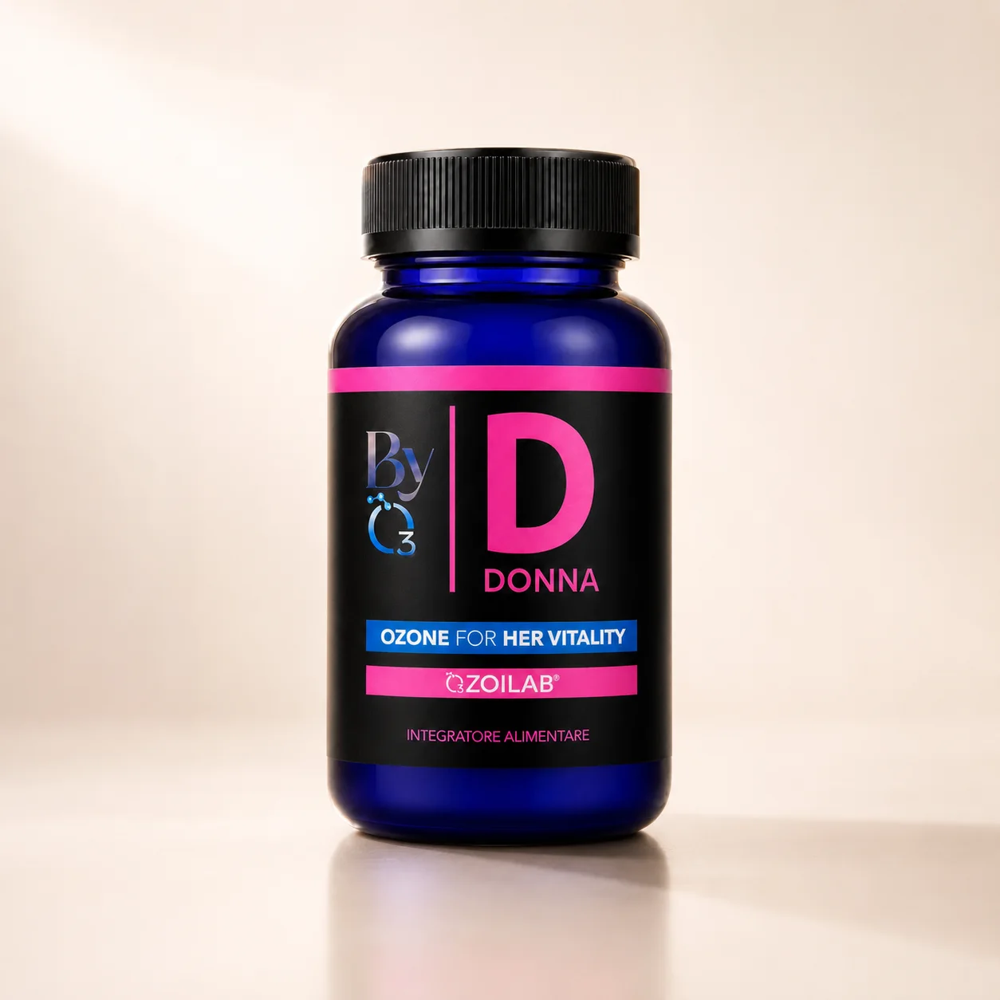
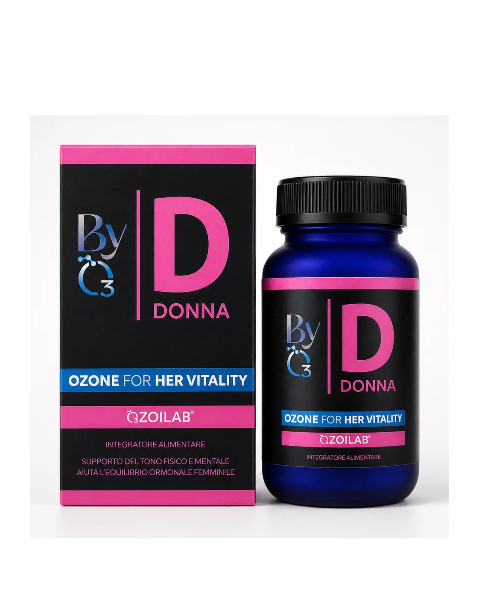
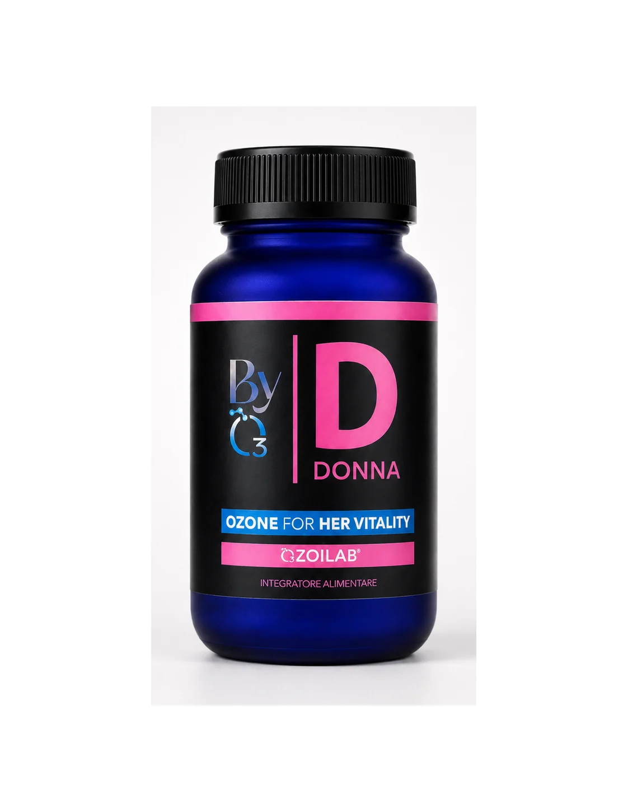
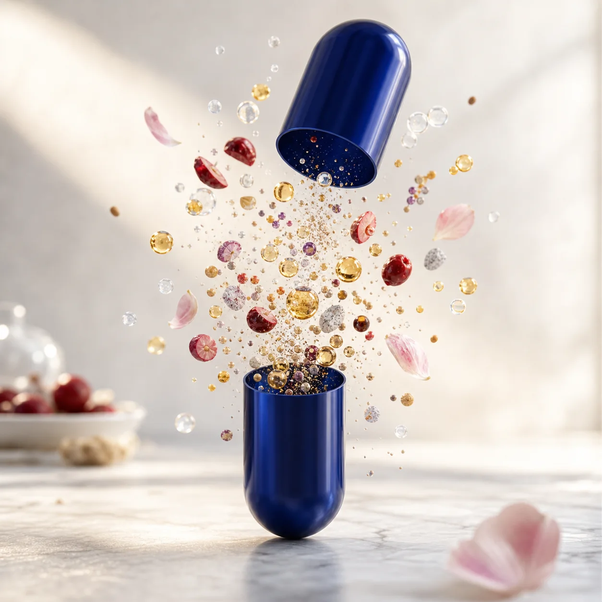

Equilibrio
Per accompagnare le fasi della vita femminile con misura.




Ozone for Her Vitality
Una formula quotidiana per tono fisico e mentale, equilibrio femminile, umore e benessere uro-genitale.
Per accompagnare le fasi della vita femminile con misura.
Griffonia e adattogeni sono parte della logica formulativa.
Cranberry e ingredienti selezionati per un tema trattato con naturalezza.
La tecnologia comune a tutta la linea BYO3.
Donna abbina OZOILAB® a minerali, aminoacidi, estratti vegetali e attivi selezionati.
Il beneficio è raccontato con precisione: tono, equilibrio, umore e benessere quotidiano, non promesse assolute.
Sconsigliato in gravidanza e allattamento senza consulto medico. Leggere sempre l'etichetta.
2 capsule al giorno, con o senza cibo.
Circa 30 giorni per confezione.
Non indicato in caso di deficit G6PD/favismo.